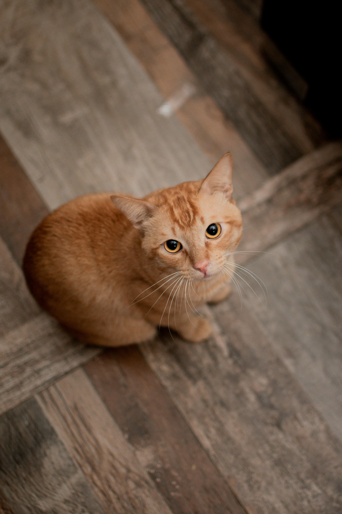

Hei Kamuu!
Aku boleh jujur engga nih? ☺️
Aku boleh jujur engga nih? ☺️

Kalo kamu tanya kenapa aku suka sama kamu Lia, itu karena aku punya rasa nyaman tersendiri yang ga akan aku temui di mana pun.
Kamu Tau Lia?
Gaada yang bisa bikin aku nyaman selain kamu..
Dan karena mengenalimu, aku merasakan apa itu kenyamanan, apa itu kebahagiaan, dan kamu sekaligus rumah bagiku :)